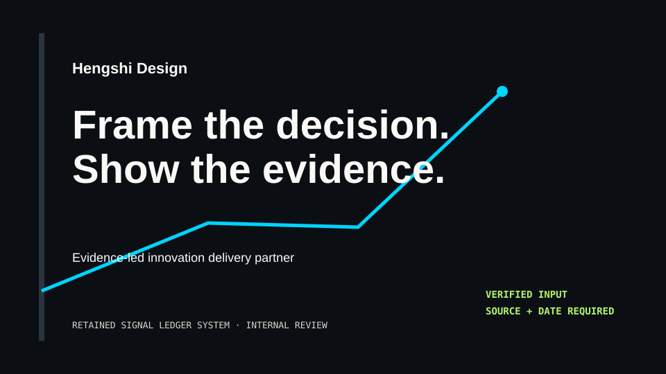
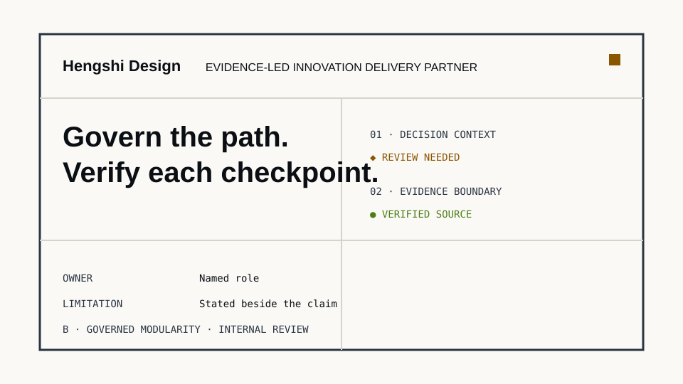
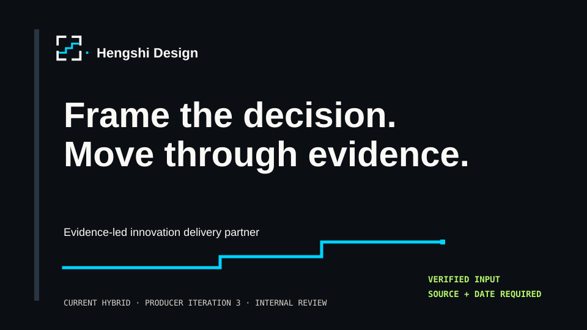

Retained system
Signal Ledger

Palette, typography, evidence grammar, asymmetrical layout, imagery, iconography, data, motion, sound, 3D, accessibility, SEO, semantic HTML, and non-WebGL equivalence remain.
Phase 1 · producer iteration 3 of 3 · internal review only
One current hybrid: the retained Signal Ledger identity system with a reconciled Quiet Framework-derived logo. Governed modularity frames accountable movement.
Exploratory — unregistered — trademark not cleared. No asset is approved for publication or production use.
D-027 · CR-001
Retained system

Palette, typography, evidence grammar, asymmetrical layout, imagery, iconography, data, motion, sound, 3D, accessibility, SEO, semantic HTML, and non-WebGL equivalence remain.
Source exploration

Four open modules and governed boundaries supply the logo ancestry. The unchanged B direction is not being selected or pasted into A.
Current candidate

The open framework holds a non-diagonal stepped evidence relay. The shared module, stroke, spacing, checkpoint, and square geometry make one authored mark.
Superseded: the iteration-2 H-derived Signal Ledger logo is preserved under archive/iteration-2-signal-ledger-logo/ for rollback and audit only. Closed historical: Resonant Field is not a current candidate.
Current identity system
From complex ambition
to accountable delivery.
Hengshi Design is an evidence-led innovation delivery partner. The full name and category remain semantic text; the mark is a secondary memory device.
#0B0F14#D8D3C8#FAF9F6#00D4FF#FFB000#B6F36B#A98CFF


Proof is visible
Verified
Filled circle / solid; source and date required.
Hengshi-owned demo
Open diamond / dash-dot 10 4 2 4.
Proposed
Filled square / short-dash 8 6.
Review needed
Filled triangle / long-dash 16 7.
Unavailable
Filled bar / dotted 2 7.
Error
Open octagon / double-solid; recovery stated.
Every chart also needs title, unit, time period, scope or sample, source, limitation, summary, and accessible description or exact-value table. This direct-label evidence closes R-020 for this package.
Representative use
Explore how the approved services could shape an accountable path around your outcome and operating context.
■ ┅ Proposed method
A formal service title and intended decision context. Scope, evidence, limitations, related Trust material, and next action stay visible.

Equivalent access and human gates
Complete semantic content, formal names, evidence states, help, and booking without WebGL, motion, audio, or imagery.
Signal paths appear in their stable end state. No required camera travel, parallax, loop, particle, or transition.
Shape, line pattern, direct label, and reading order preserve identity and evidence meaning in one ink.
Independent review, founder selection, trademark clearance, paid assets, and publication remain required.
Final producer revision; no iteration 4. A non-pass review is recorded and escalated to the founder. This board contains no client work, measured outcome, expert identity, legal entity fact, office, certification, or production claim.